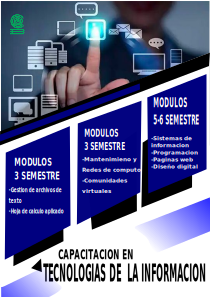

Capacitaciones Que Brindamos

1Capacitacion en tecnologias de la informacion
Impartir conocimientos orientados alas tecnologias es de suma importancia en la actualidad ya que las tecnologias continuan con un auge constante y se debe estar a la vanguardia es por ello que se trata de preparar alos jovenes .
2Capacitacion en Alimentos
Dar conocimientos sobre la correcta alimentacion ,preparaciony aprovechamiento de los alimentos les permitira a los jovenes desarrollar habilidades de cocina orientado a la comida o reposteria el cual brindara mas conocimientos y capacidades .